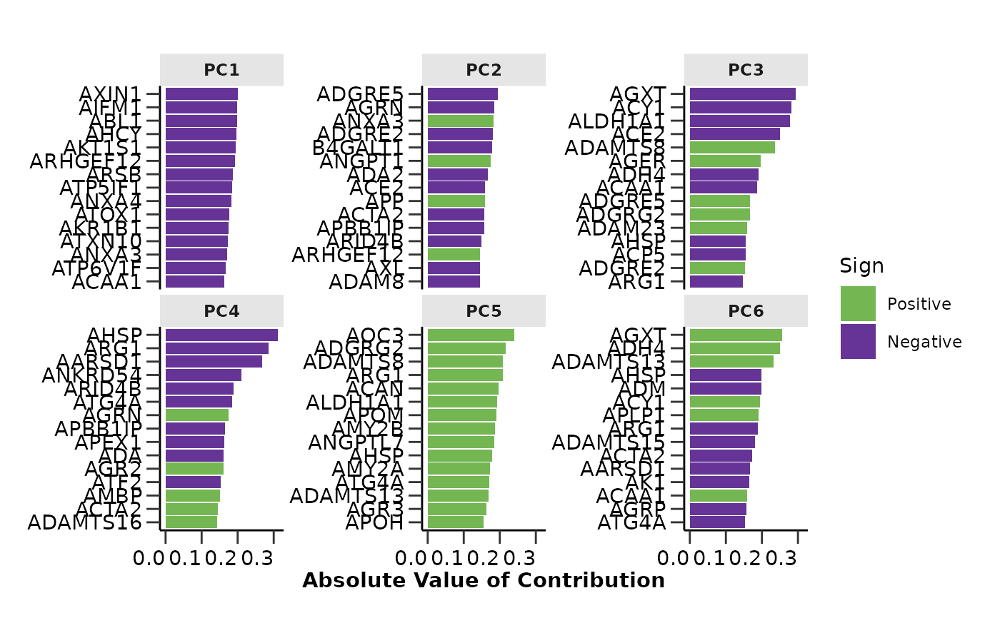
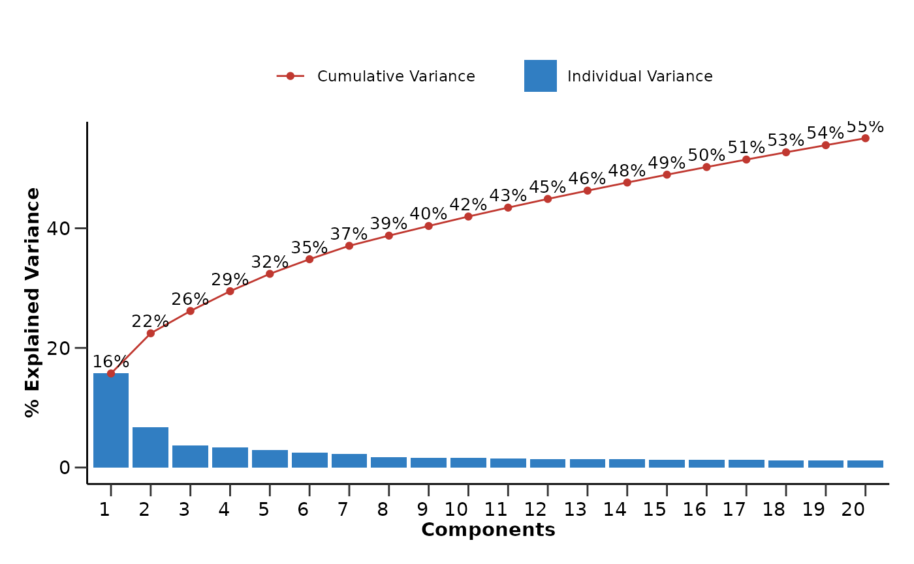
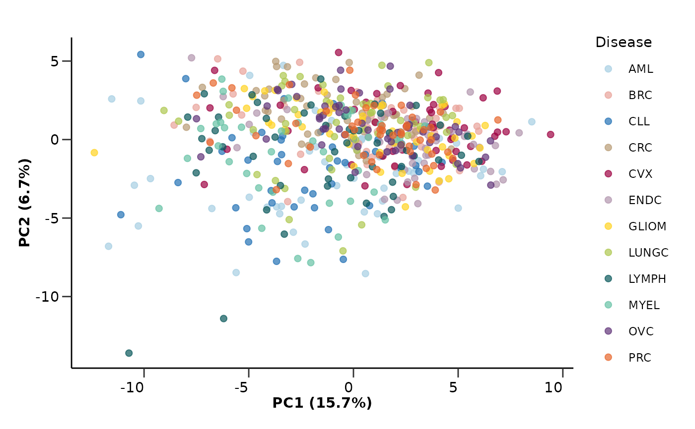

hd_auto_pca() runs a PCA analysis on the provided data and plots the PCA results.
Usage
hd_auto_pca(
dat,
metadata = NULL,
components = 10,
by_sample = TRUE,
impute = TRUE,
plot_x = "PC1",
plot_y = "PC2",
plot_color = NULL,
plot_palette = NULL
)Arguments
- dat
An HDAnalyzeR object or a dataset in wide format and sample ID as its first column.
- metadata
A dataset containing the metadata information with the sample ID as the first column. If a HDAnalyzeR object is provided, this parameter is not needed.
- components
The number of PCs to be calculated. Default is 10.
- by_sample
If TRUE, points represent samples. If FALSE, points represent features. Default is TRUE.
- impute
If TRUE, missing values will be imputed using the k-nearest neighbors algorithm (k = 5). Default is TRUE.
- plot_x
The name of the column in
dim_resthat contains the x-axis values. Default is "PC1".- plot_y
The name of the column in
dim_resthat contains the y-axis values. Default is "PC2".- plot_color
The name of the column in
dim_resthat contains the variable to be used to plot the points color. Default is NULL.- plot_palette
The color palette for the plot. If it is a character, it should be one of the palettes from
hd_palettes(). Default is NULL.
Examples
# Create the HDAnalyzeR object providing the data and metadata
hd_object <- hd_initialize(example_data, example_metadata)
# Run the PCA analysis
hd_auto_pca(hd_object, components = 20, plot_color = "Disease", plot_palette = "cancers12")
#> $pca_res
#> # A tibble: 586 × 21
#> DAid PC1 PC2 PC3 PC4 PC5 PC6 PC7 PC8 PC9
#> <chr> <dbl> <dbl> <dbl> <dbl> <dbl> <dbl> <dbl> <dbl> <dbl>
#> 1 DA00001 -3.67 -4.28 -2.34 -3.10 -2.65 -2.73 -2.78 0.433 -3.23
#> 2 DA00002 4.11 -2.64 2.04 -0.441 -4.43 -1.91 -0.897 1.54 -0.283
#> 3 DA00003 -3.34 4.72 1.41 0.881 -0.561 0.308 -0.0612 -0.267 1.42
#> 4 DA00004 -4.78 0.443 1.41 0.107 -1.10 -0.262 0.350 3.33 -0.336
#> 5 DA00005 -4.98 -3.67 0.711 -5.70 -0.807 -3.77 -0.969 1.83 -1.29
#> 6 DA00006 0.395 0.0572 -1.90 -7.75 0.707 -2.70 -0.681 0.301 -0.486
#> 7 DA00007 -10.5 -2.91 -0.382 -0.841 -1.61 1.96 -1.30 2.51 -2.23
#> 8 DA00008 2.64 -2.01 2.75 -0.128 -0.852 0.408 -1.70 0.595 -0.135
#> 9 DA00009 -1.79 -0.461 2.79 -2.61 -2.71 0.0732 -3.08 1.75 -1.72
#> 10 DA00010 3.57 0.821 -0.00756 1.50 -2.66 -0.856 0.0190 1.17 -0.683
#> # ℹ 576 more rows
#> # ℹ 11 more variables: PC10 <dbl>, PC11 <dbl>, PC12 <dbl>, PC13 <dbl>,
#> # PC14 <dbl>, PC15 <dbl>, PC16 <dbl>, PC17 <dbl>, PC18 <dbl>, PC19 <dbl>,
#> # PC20 <dbl>
#>
#> $pca_loadings
#> # A tibble: 10,000 × 3
#> terms value component
#> <chr> <dbl> <chr>
#> 1 AARSD1 -0.133 PC1
#> 2 ABL1 -0.198 PC1
#> 3 ACAA1 -0.163 PC1
#> 4 ACAN 0.0123 PC1
#> 5 ACE2 -0.0583 PC1
#> 6 ACOX1 -0.135 PC1
#> 7 ACP5 -0.0626 PC1
#> 8 ACP6 -0.0933 PC1
#> 9 ACTA2 -0.0751 PC1
#> 10 ACTN4 -0.0424 PC1
#> # ℹ 9,990 more rows
#>
#> $pca_variance
#> # A tibble: 20 × 3
#> component percent_variance cumulative_percent_variance
#> <int> <dbl> <dbl>
#> 1 1 15.7 15.7
#> 2 2 6.72 22.4
#> 3 3 3.73 26.2
#> 4 4 3.31 29.5
#> 5 5 2.90 32.4
#> 6 6 2.44 34.8
#> 7 7 2.25 37.1
#> 8 8 1.70 38.8
#> 9 9 1.61 40.4
#> 10 10 1.58 42.0
#> 11 11 1.49 43.5
#> 12 12 1.45 44.9
#> 13 13 1.39 46.3
#> 14 14 1.35 47.6
#> 15 15 1.32 49.0
#> 16 16 1.27 50.2
#> 17 17 1.25 51.5
#> 18 18 1.22 52.7
#> 19 19 1.19 53.9
#> 20 20 1.17 55.1
#>
#> $by_sample
#> [1] TRUE
#>
#> $pca_loadings_plot

#>
#> $pca_variance_plot

#>
#> $pca_plot
#> Ignoring unknown labels:
#> • Color : "Disease"

#>
#> attr(,"class")
#> [1] "hd_pca"